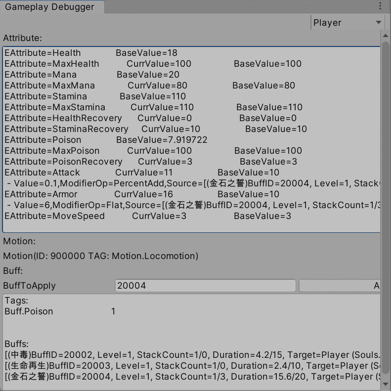
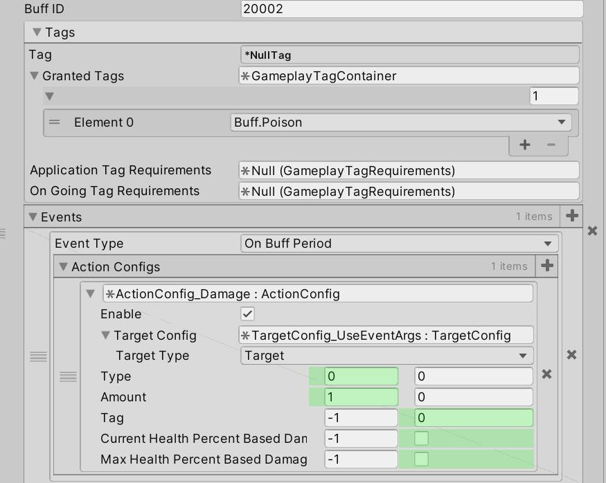
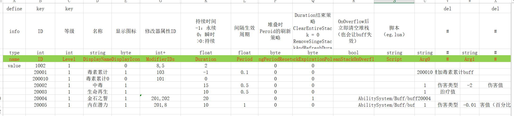

buff处理自身的生命周期、叠加，数值，状态外，还可以响应任何模块的事件。
实现
buff系统事件模块，主要由Event、Action、Target三部分组成。
1.Event
事件，buff的灵魂，参考了Dota2的技能系统。buff里本身没有其他游戏逻辑，只定义事件，绑定Action。buff自身也有一些OnCreated、OnDestroyed事件等，这些buff相关的事件自己管理，其他事件，例如OnDamage事件，则buff监听战斗模块的事件，战斗模块抛出事件，buff便可响应，调用绑定好的Action。所以，buff是一个中介者的角色，真正的游戏效果实现，还是在各个模块里实现的。
事件参数，通过EventArgs包装，可以方便接入c# EventHandler设计。
自定义绑定 参考
partial void Register(ICombatUnit unit)
{
if (Target == null) return;
Target.OnAfterDealDamage += Unit_OnAfterDealDamage;
Target.OnBeforeReceiveDamage += Unit_BeforeReceiveDamage;
Target.OnAfterReceiveDamage += Unit_OnAfterReceiveDamage;
}
partial void Unregister()
{
if (Target == null) return;
Target.OnAfterDealDamage -= Unit_OnAfterDealDamage;
Target.OnBeforeReceiveDamage -= Unit_BeforeReceiveDamage;
Target.OnAfterReceiveDamage -= Unit_OnAfterReceiveDamage;
}
private void Unit_BeforeReceiveDamage(DamageInfo damageInfo, IHealthOwner target, IDamageDealer attacker)
{
var args = EventArgs_Damage.Create(attacker, target, damageInfo);
HandleEvent((int)EEvent_Buff.OnBeforeReceiveDamage, args);
EventArgs_Damage.Release(args);
}
private void Unit_OnAfterReceiveDamage(DamageInfo damageInfo, IHealthOwner target, IDamageDealer attacker)
{
var args = EventArgs_Damage.Create(attacker, target, damageInfo);
HandleEvent((int)EEvent_Buff.OnAfterReceiveDamage, args);
EventArgs_Damage.Release(args);
}
private void Unit_OnAfterDealDamage(DamageInfo damageInfo, IDamageDealer attacker, IHealthOwner target)
{
var args = EventArgs_Damage.Create(attacker, target, damageInfo);
HandleEvent((int)EEvent_Buff.OnBeforeDealDamage, args);
EventArgs_Damage.Release(args);
}2.Action
行动，buff执行逻辑的代理，非常类似行为树的Action节点。一般来讲，除非是非常简单的逻辑，否则都推荐调用各个模块里的方法来实现。
Action设计为瞬时调用，调用完，对象将会被释放掉。
所有的Action都是可以序列化配置的，将配置ActionConfig和运行时对象Action分开，使用多态序列化，可以直接在Inspector面板上编辑，非常方便。
Action可以嵌套Action，可以实现Condition，或者一些链式需求！
Action_Random 参考
using System.Collections.Generic;
namespace Saro.Gameplay.Ability
{
public sealed class Action_Random : BaseAction
{
public FloatValue chance;
public BaseAction onSuccess;
public BaseAction onFailure;
public override BaseActionSpec CreateSpec()
{
return BaseActionSpec.CreateSpec<ActionSpec_Random>(this);
}
}
public sealed class ActionSpec_Random : BaseActionSpec
{
public Action_Random Cfg => BaseCfg as Action_Random;
public float chance;
private IList<string> m_ContextArgs;
public override void Invoke(GameplayEventArgs args, int evtID)
{
var cfg = Cfg;
var rnd = UnityEngine.Random.value;
if (rnd <= chance)
{
AbilityEventHandler.InvokeAction(cfg.onSuccess, evtID, args, m_ContextArgs);
}
else
{
AbilityEventHandler.InvokeAction(cfg.onFailure, evtID, args, m_ContextArgs);
}
m_ContextArgs = null;
}
public override void ResolveArgs(IList<string> args)
{
m_ContextArgs = args;
var cfg = Cfg;
cfg.chance.Resolve(args, ref chance);
}
}
}3.Target
目标选择器，用于筛选目标。Action等对象，需要目标，可以通过此对象进行筛选，可以自行扩展。例如Target_UseEventArgs，此筛选器可以通过EventArgs筛选目标。
Target_UseEventArgs 参考
using System;
using Saro.Utility;
namespace Saro.Gameplay.Ability
{
public class Target_UseEventArgs : BaseTarget
{
public override ITargetFilter CreateSpec()
{
var spec = SharedPool.Rent<TargetSpec_UseEventArgs>();
spec.Cfg = this;
return spec;
}
}
/// <summary>
/// 使用 GameplayEventArgs 来筛选目标
/// </summary>
public class TargetSpec_UseEventArgs : BaseTargetSpec
{
public BaseTarget Cfg { get; set; }
public override ETargetType TargetType => Cfg.targetType;
public override void GetTargets(GameplayEventArgs args)
{
if (args is EventArgs_Damage _damageArgs)
{
if (TargetType.HasFlag(ETargetType.Target))
{
if (_damageArgs.Target is ICombatUnit _combatUnit)
{
Targets.Add(_combatUnit);
}
}
if (TargetType.HasFlag(ETargetType.Caster))
{
if (_damageArgs.Attacker is ICombatUnit _combatUnit)
{
// Target Caster 可能是相同 对象，需要处理下
Targets.AddUnique(_combatUnit);
}
}
}
else if (args is EventArgs_BuffGeneric _buffGenericArgs)
{
if (TargetType.HasFlag(ETargetType.Target))
{
Targets.Add(_buffGenericArgs.BuffSpec.Target);
}
if (TargetType.HasFlag(ETargetType.Caster))
{
// Target Caster 可能是相同 对象，需要处理下
if (_buffGenericArgs.BuffSpec.Caster != null)
{
Targets.AddUnique(_buffGenericArgs.BuffSpec.Caster);
}
}
}
else if (args is EventArgs_BuffStack _buffStackArgs)
{
BuffSpec buff = (BuffSpec)_buffStackArgs.Handle;
if (buff != null)
{
if (TargetType.HasFlag(ETargetType.Caster))
{
// Target Caster 可能是相同 对象，需要处理下
if (buff.Caster != null)
{
Targets.AddUnique(buff.Caster);
}
}
if (TargetType.HasFlag(ETargetType.Target))
{
Targets.Add(buff.Target);
}
}
}
else if (args is EventArgs_AbilityGeneric _abilityGenericArgs)
{
if (TargetType.HasFlag(ETargetType.Caster))
{
// Target Caster 可能是相同 对象，需要处理下
Targets.AddUnique(_abilityGenericArgs.Ability.Caster);
}
if (TargetType.HasFlag(ETargetType.Target))
{
throw new Exception("Target is invalid for EventArgs_AbilityGeneric");
}
}
else if (args is EventArgs_AbilityCanActivate _abilityCanActivateArgs)
{
throw new Exception("unhandled event: EventArgs_AbilityCanActivate");
}
}
}
}Buff自身逻辑
1.属性改变
使用GameplayAttribute，游戏性属性。buff成员变量，包含一个MofifierConfig数组，可以通过表格来配置，buff生效时，会应用属性，销毁时，会移除应用的属性。
2.状态改变
使用GameplayTag，游戏性标记。buff生效时，都会给buffContainter添加一些配置的tag，通过这个tag，来判断状态，所有buff自己管理自己的tag就够了，buffContainer可以自己处理tag叠加问题，并且提供了tag数量变化的事件，其他模块可以很方便监听，实现tag的响应。
3.堆叠和溢出
buff堆叠，会抛出堆叠事件，通过自定义Action进行游戏逻辑处理。
堆叠时，属性改变也会被堆叠，层数减少时，属性改变也会相应减少。（TODO考虑新增一个参数，控制堆叠是否影响属性改变）
当buff堆叠超过最大堆叠数量限制时，会抛出溢出事件。
4.buff的施加和驱散
也是使用GameplayTag，buff自身包含一系列tag。
- grantedTags，生效时，授予的tags
- applicationTagRequirements，应用时，需要满足的tags
- onGoingTagRequirements，生效期间，满足条件，才会走buff period事件，但不会影响应用属性、grantedTags等瞬时操作。
除了可以通过tag驱散，也可以直接通过buffID、buffHandle驱散，但一般推荐tag，tag可以代表一个系列buff的集合。
通过DestroyBuff(Buff buff, object destroyer)，传入destroyer，可以判定是自然结束，还是被其他人销毁
5.buff时间策略
持续时间(duration)
- 应用buff时，是否刷新已存在buff的duration
- 每层结束后，是否刷新duration。不刷新，则清空所有层数，并移除buff；刷新，则减少一层，重新计时
- 每层结束或，刷新duration，且抛出事件，可以自定义层数事件，例如，让duration根据层数变化等。
buff生效周期(period)
- 应用buff时，是否刷新period
配置
逻辑数据，在Inspector直接配置多态数据，使用Odin插件，序列化为json，也可以考虑序列化成protobuf。
等级之类的数值数据，采用配置表配置。新增ValueSource类，处理是否使用表格数据。
配置 参考
 扩展性
1.数据驱动化配置
- 通过c#自定义可复用Action，数据驱动组合，已经可以在编辑器面板，制作很多buff了
2.脚本化buff(IScriptRunner)
针对特化buff，提供一下支持
- 支持c#字符串和委托绑定，继承ICSharpScript
- lua支持
lua支持 参考
require("AbilityInterface")
local buff1001 = {}
-- 重写哪些事件
function buff1001:DeclareFunctions()
local funcs = {
1, -- OnBuffCreated
3, -- OnBuffPeriod
27 -- OnAfterReceiveDamage
}
return funcs
end
function buff1001:OnBuffCreated(args)
-- 读取buff数据表的用户数据
local buffDataArgs = args.buff.Data.Args
local arg0 = tonumber(buffDataArgs[0])
local arg1 = tonumber(buffDataArgs[1])
local arg2 = tonumber(buffDataArgs[2])
local attributeSet = args.buff.Target.AttributeSet
attributeSet:ApplyModifier(arg0, arg2, arg1, args.buff)
end
function buff1001:OnBuffPeriod(args)
print("buff1001 OnBuffPeriod. args: [" .. args:ToString() .. "]")
end
function buff1001:OnAfterReceiveDamage(args)
if args.damageInfo.damageTag:HasFlag(EDamageTag.NoReflect) then
return
end
if (args.attacker == nil) then
return
end
-- 造成2.2倍反击伤害
local finalDamage = math.floor(args.damageInfo.amount * 2.2)
local damageInfo = DamageInfo:Create(EDamageType.Magical, finalDamage, EDamageTag.NoReflect)
DamageHelper:ApplyDamage(args.target, args.attacker, damageInfo)
DamageInfo:Release(damageInfo)
-- 眩晕攻击者
args.attacker.BuffContainer:ApplyBuff(1002, args.target)
end
return buff1001思考
- 如何设计游戏事件，提高buff系统的健壮性、扩展性
- 如何嵌入ecs系统？或者改成ecs的实现？